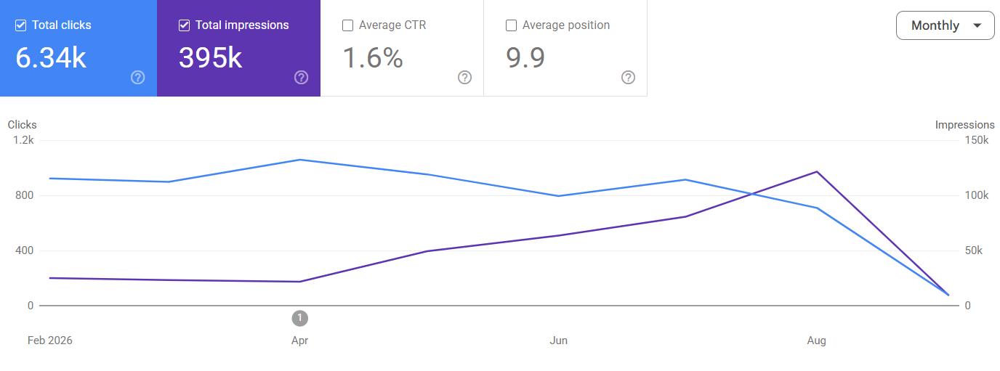

Customer Story
Customer Story
SEO + AI visibility growth
Asymbl's Organic Growth: 387% Growth in Search Visibility. 10 MQLs Generated
- 387% growth in search visibility, from 24,999 to 121,727 monthly impressions.
- 8× expansion in search coverage, from 381 queries to 3,210.
- 10 MQLs generated, split evenly between Google Search and AI/answer engines.
- 85% of website traffic influenced by blog content.
AI Answer Engine Visibility Growth
Mentions, citations & cited pages in AI answers, Nov 2025 vs. Aug 2026.
Nov 2025Aug 2026
ImpressionsBlogs
May → Aug: +260% (26,665 → 96,015 impressions)
ClicksBlogs
May → Aug: +257% (23 → 82 clicks)
AI SessionsBlogs
Jun → Aug: +35% (23 → 31 AI sessions)
Dashed = September, partial month (data through Sept 2)
Blog Content Drove 85% of Asymbl's Website Traffic
Feb 1 – Sept 3 totals: 6.34K clicks · 395K impressions.
ClicksImpressions

Top performing content
Blogs driving the most search visibility
01
02
11 AI citations
03
8 AI citations
04
23 AI citations
05
Recruitment Process Automation
39,340Impressions
30Clicks
Best Recruitment Automation Software
29,787Impressions
19Clicks
What Is an Applicant Tracking System?
23,923Impressions
8Clicks
Best Applicant Tracking System
9,506Impressions
11Clicks
Staffing Software Solutions
5 AI citations 06Recruitment Agency Software
4 AI citations 07AI Staffing Solutions
3 AI citationsWhat Asymbl needed
What I owned
Low search visibility Asymbl was ranking for just 381 search queries, limiting its reach across high-value recruiting and HR-tech topics.
SEO strategy Conducted monthly keyword research and built content strategies around high-value search opportunities and emerging category gaps.
Limited topical authority With too little content across its core categories, Asymbl lacked the depth needed to build topical authority and establish category leadership.
AI content automation Built a multi-agent AI system to automate keyword research, outlines, and first-draft creation, scaling content production without sacrificing strategy.
Low AI visibility Asymbl had limited presence in AI and answer engines, leaving a growing discovery channel largely untapped.
Content creation & quality Reviewed, edited, and refined AI-generated content to ensure accuracy, SEO performance, and Asymbl's thought leadership strategy.
Pages and blogs I worked on
Pillar guide
Recruitment Automation
Read on asymbl.com ComparisonBest Recruitment Automation Software
Read on asymbl.com ComparisonCRM vs ATS
Read on asymbl.com GuideWhat Is a Recruitment Management System?
Read on asymbl.com GuideThe Recruiting Funnel
Read on asymbl.com GuideRecruiting Software
Read on asymbl.com Use caseSalesforce for Recruiting
Read on asymbl.com ComparisonBest Applicant Tracking System
Read on asymbl.com AIAI Agents for Recruiting
Read on asymbl.com AIAI Candidate Screening
Read on asymbl.com Lead-generating blogBenefits of AI in Recruitment
Read on asymbl.com Lead-generating blogSalesforce ATS System
Read on asymbl.com ComparisonTop Recruiting CRM Software
Read on asymbl.com GuideWhat Is an Applicant Tracking System?
Read on asymbl.com Use caseApplicant Tracking System for Staffing Agencies
Read on asymbl.com MetricsRecruitment Metrics
Read on asymbl.com GuideEnterprise Recruitment Software
Read on asymbl.com GuideRecruitment Process Automation
Read on asymbl.com GuideCandidate Sourcing Strategies
Read on asymbl.com AIAI Sourcing Tools for Recruiting
Read on asymbl.com AIAI in Recruitment
Read on asymbl.com ComparisonBest Talent Intelligence Software for Staffing in 2026
Read on asymbl.com GuideWhat Is Talent Relationship Management?
Read on asymbl.com GuideTalent Acquisition Platform
Read on asymbl.com GuideWhat Is a Candidate Tracking System?
Read on asymbl.com GuideTalent Recruitment Strategies
Read on asymbl.com AIAI Staffing Solutions
Read on asymbl.com GuideTalent Intelligence
Read on asymbl.com GuideTalent Market Intelligence
Read on asymbl.com AIAI in Talent Acquisition
Read on asymbl.com MetricsTime to Fill
Read on asymbl.com MetricsCost per Hire
Read on asymbl.com MetricsQuality of Hire
Read on asymbl.com GuideTalent Acquisition Strategy
Read on asymbl.com GuideRecruitment Agency Software
Read on asymbl.com ComparisonTalent Acquisition vs Recruitment
Read on asymbl.com GuideStaffing Software Solutions
Read on asymbl.com GuideTalent Acquisition Analytics
Read on asymbl.com ComparisonTime to Hire vs Time to Fill
Read on asymbl.com AIAI in Staffing
Read on asymbl.com GuideHigh-Volume Recruiting
Read on asymbl.com GuideAutomated Interview Scheduling
Read on asymbl.com AIAI Recruiting Software
Read on asymbl.com GuideCandidate Management Software for Staffing & Recruiting
Read on asymbl.com AIAI Candidate Matching: From Rankings to Real Reasoning
Read on asymbl.com GuideSearch and Match Recruiting
Read on asymbl.com AIAgentic AI Implementation in Recruiting
Read on asymbl.com AIAI SDR Digital Workers
Read on asymbl.com GuideWhat Is a Digital Worker?
Read on asymbl.comLet's make your content impossible to ignore
Open to content marketing roles, freelance projects, and AI-content collaborations. Let's talk.